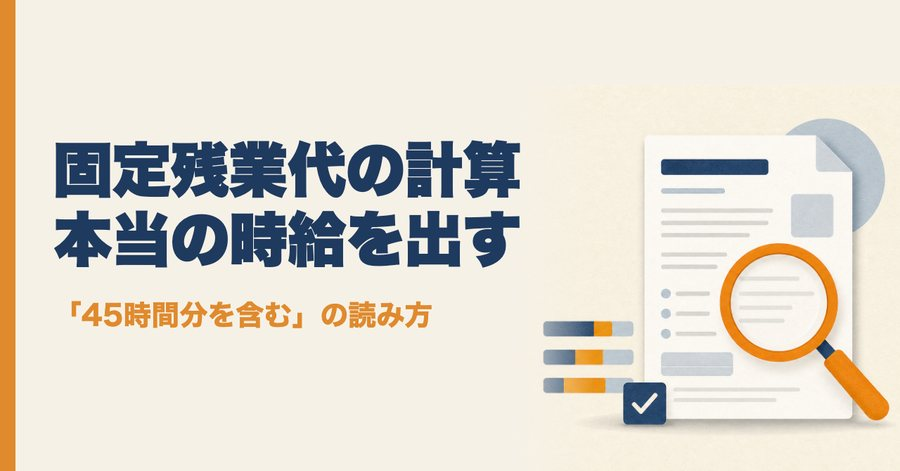
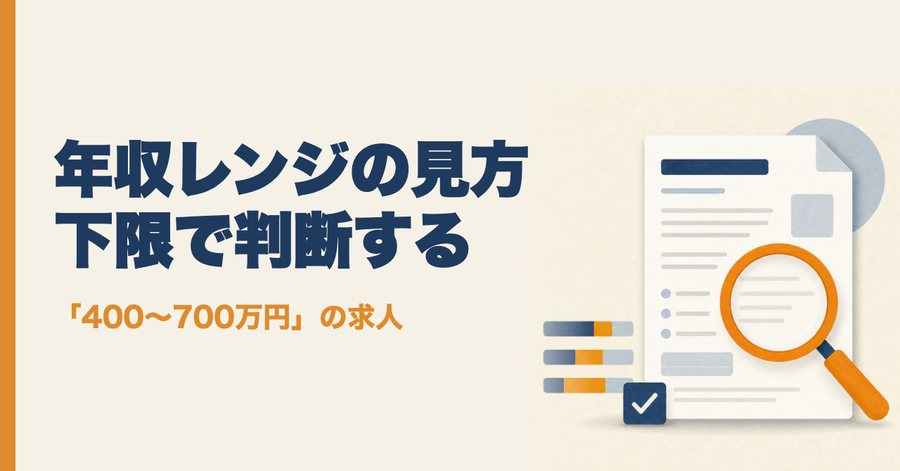
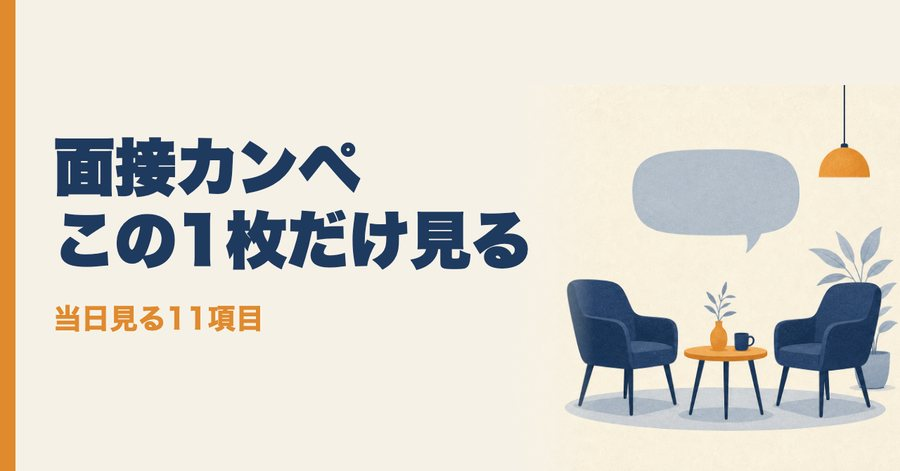
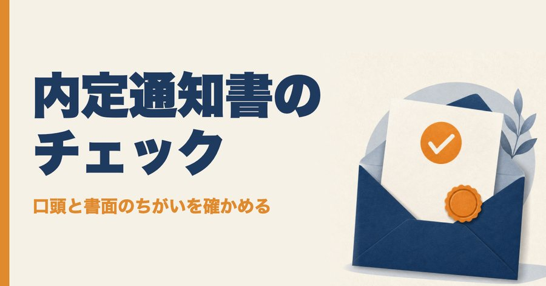

BEFORE YOU APPLY
応募する前に、求人と書類
いい言葉が並ぶ求人票から、実際の条件を読み取る。AIに貼れば、点数と本当の時給まで出せます。職務経歴書の直し方も。
求人票
求人票の見方
6項目100点で採点すると、応募で迷わなくなる。採点表つき。
READ ON NOTEAIで点数
求人票の点数をAIで出す方法
「この求人どう？」で一般論しか返らないとき。求人票を貼るだけで点数が出る指示文。
READ ON NOTE
固定残業代
固定残業代の求人は損？
「45時間分を含む」の求人を貼るだけで、基本給と本当の時給が分かる。
READ ON NOTE
年収
年収レンジの読み方
「400〜700万円」の上限を信じていいか。下限で判断する理由と確かめ方。
READ ON NOTE職務経歴書
職務経歴書をAIに直したら、立派すぎる文に？
面接で詰まらない文にする指示文と、避けたい言い方8つ。
READ ON NOTEINTERVIEW & OFFER
応募したあと、面接と内定
進み具合をAIで表にまとめる。逆質問の作り方、他社状況の答え方、返事の前に確かめること。
進み具合
転職活動の管理方法
応募が増えて、どこまで進んだか分からないとき。連絡をAIに貼るだけで表が更新される。
READ ON NOTE
面接
転職面接のカンペの作り方
当日はこの1枚だけ見ればいい。11項目のカンペの作り方。
READ ON NOTE逆質問
逆質問、AIに作ってもらっていい？
求人票を貼るだけで、年収や残業も角を立てずに聞ける逆質問を作る指示文。
READ ON NOTE他社状況
「他社の選考状況は？」の答え方
選考状況をAIに貼るだけで、聞かれるたびにずれない答えが1文で作れる。
READ ON NOTE
内定
転職の内定通知書チェック
口頭の説明と書面がちがったら。サインの前に確かめること。
READ ON NOTEWHEN WORK HURTS
職場でつらいとき、AIを味方にする
辞めるかどうかを決める前に、まず記録する。言い返す前に、AIで整える。


MAGAZINE
マガジンで、まとめて読む
noteでは2つのマガジンに分けています。フォローしておくと、新しい記事が届きます。